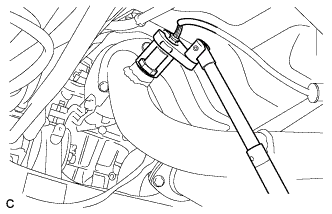

Exhaust Pipe Assembly (2GR-FE) Removal |
| 1. Remove Exhaust Tail Pipe Assembly |
 |
Remove the 2 bolts and 2 compression springs.
Disconnect the 2 exhaust pipe supports and remove the exhaust tail pipe assembly.
Remove the gasket.
| 2. Front Floor Center Brace Removal |
 |
Remove the 4 bolts and the front floor brace center.
| 3. Center Exhaust Pipe Sub-assembly NO.2 Removal |
 |
Remove the 2 bolts and 2 compression springs.
Remove the 4 exhaust pipe supports and remove the center exhaust pipe assembly NO.2.
| 4. Remove Exhaust Pipe Assembly Center |
 |
Disconnect the oxygen sensor and, using SST, remove the oxygen sensor.
 |
Remove the 2 bolts and 2 nuts, and remove the exhaust center pipe assembly.
Remove the 2 gaskets.
| 5. Remove Exhaust Pipe Assembly Front |
 |
Disconnect the NO.2 oxygen sensor connector and, using SST, remove the oxygen sensor.
 |
Remove the 2 bolts and exhaust pipe bracket.
 |
Remove the 2 nuts and exhaust pipe assembly front.
Remove the gasket.